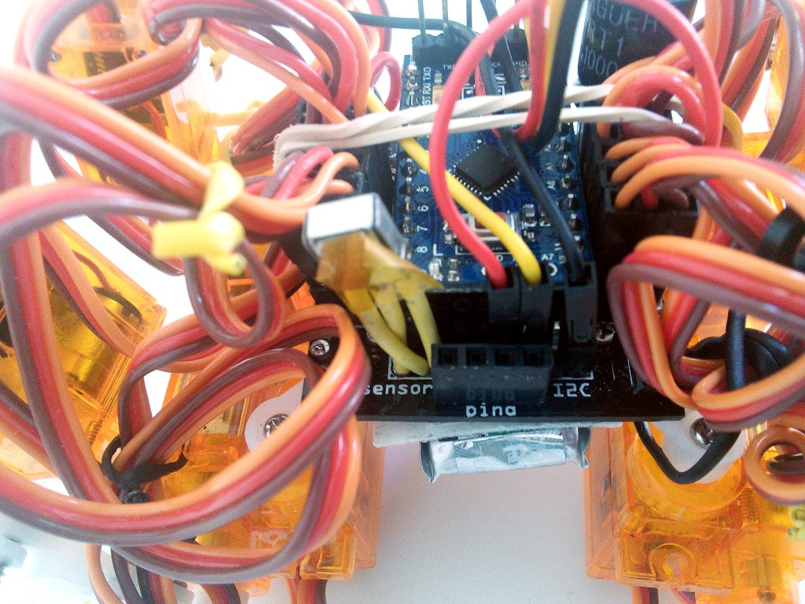
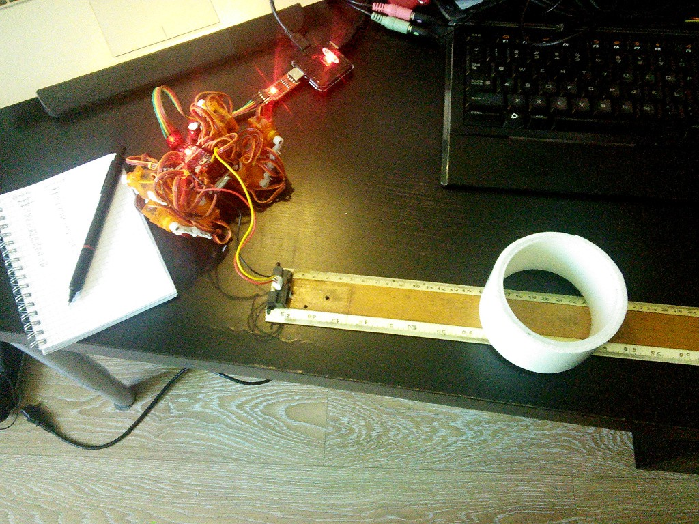
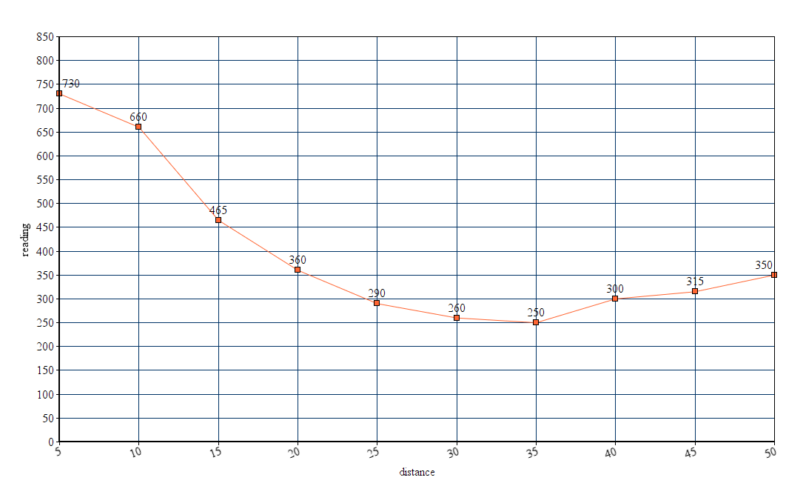
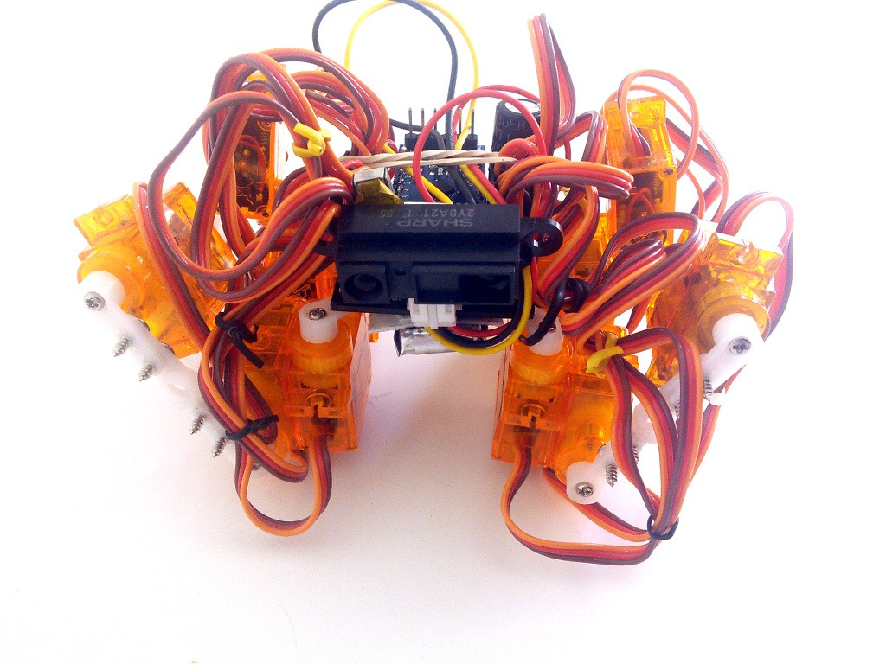

Distance Sensor, Second Try¶
Published on 2015-07-10 in Tote.
Seonsors are very important for robots, and a distance sensor is one of the most useful ones that you can install, as it gives the robot an approximation of vision. I tried to use an ultrasound distance sensor with Tote before, and failed miserably. This time I’m going to use an infra-red distance sensor.
The Sharp 2Y0A21 [pdf] sensor is probably one of the most popular hobby robot sensors out there, right after the ultrasonic one. But it takes 5V as the power supply. Will it work at our robot’s 3.3V? Let’s find out!
Connecting this sensor is easy. There are three cables: red for power, black for ground and yellow for the sensor output. The voltage on the output wire will vary depending on the distance being read by the sensor, so we have to connect it to an analog pin. The easiest way to use that sensor with Tote is to plug the wires into the I²C pin header, as both of the I²C pins of the Pro Mini are, by coincidence, also analog pins, and we have convenient 3.3V power and ground it there too. The photo above shows how to connect it.
Now, the first test. Does it even start when powered with 3.3V? There is an easy way to check any infra-red devices – just look at them through a digital camera. The camera sensors are much more sensitive to infra-red light than our eyes, and will show you a shining LED. Test passed.
Next, let’s try to get some readings and calibrate the sensor. I’m powering it with out-of-spec power, so anything written in the datasheet will most likely be completely wrong. We need to do our own calibration. We can do this with this extremely complex Arduino sketch:
void setup() {
Serial.begin(115200);
pinMode(A4, INPUT);
}
void loop() {
Serial.println(analogRead(A4));
delay(300);
}
It will basically repeatedly read the analog pin value and print it on the serial line. We can use the Arduino IDE’s serial monitor to see those values. A quick test and yay, we are getting readings, and they are different depending on the distance. So far so good.
The photo above shows my testing rig. A long ruler, the sensor taped to one end, and a reasonably reflective white object. Note, that the power line from the USB2TTL is disconnected and the Pro Mini is running on the battery power, so that it gets to regulate its own 3.3V for the sensor, and doesn’t rely on the power from the computer. Here are the measurements I did, plotted on a chart:
As you can see, the sensor has a much shorter useful range than the 80cm it gets on 5V. At about 35cm it starts to break already. But that’s fine, 35cm is a lot for our robot. We also won’t need exact measurements, so no need to convert those numbers to centimeters – we will just read the chart for setting our limits.Next, let’s actually attach the sensor to our robot and make it do something. Of course, the simplest thing it can do is to stop before it hits an obstacle.
I used adhesive tape to attach the sensor to the front of the robot. I might come up with a better way of doing it in the future, but this is good enough for now. Now let’s add some code that does the stopping. We just add a sharp.ino file, with corresponding_sharp.h_, and call it all from start.ino . And let’s see the results:
It works as expected, the robot consistently stops at about 15cm from the obstacle. That’s it for today, in the future I will show how to code a simple obstacle-avoiding algorithm, and then how to make the robot follow you around.